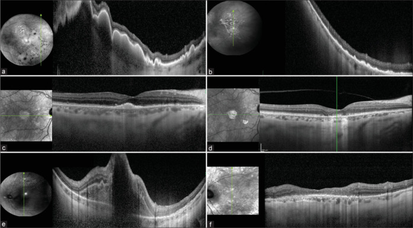
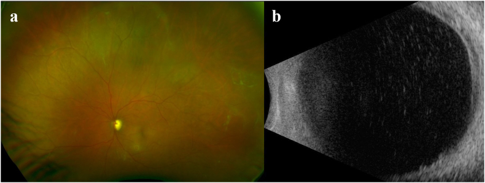
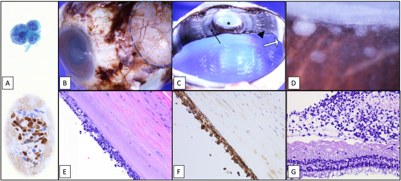
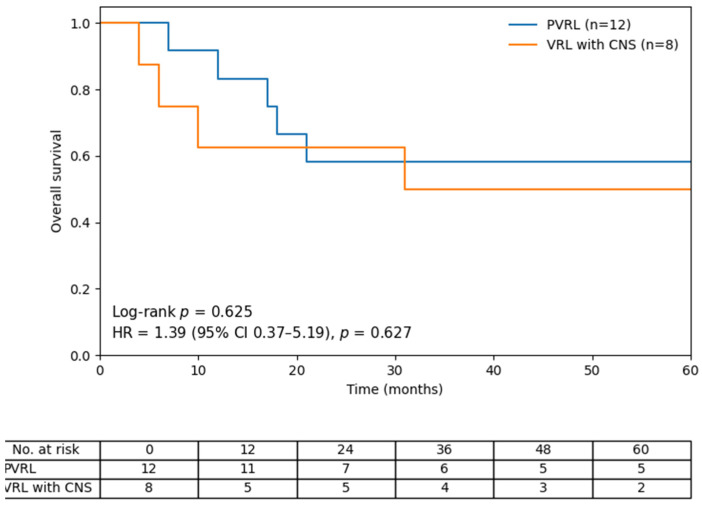

491 — Theo dõi & tái phát u lympho nội nhãn tiên phát (PVRL): tái phát nội nhãn, tiến triển CNS và lịch MRI / Surveillance and relapse of primary vitreoretinal lymphoma
Tags: pattern:tai-phat-pvrl pattern:viet-dich-kinh vung:vong-mac vung:than-kinh-trung-uong score:IPCG-response score:IL-10 protocol:MRI-nao-4-6-thang protocol:OCT-FAF-theo-doi
Mức chắc chắn (certainty): tổng hợp y văn (literature synthesis) — nhóm tự biên từ y văn mở (Ann Hematol 2025 CC BY 4.0; J Clin Med 2026 CC BY 4.0; Indian J Ophthalmol 2026 CC BY-NC-ND 4.0; Cancers 2026 CC BY 4.0; Am J Ophthalmol Case Rep 2025 CC BY-NC-ND 4.0; Sci Rep 2026 CC BY 4.0), chưa gắn một ca nguyên văn xuyên suốt.
Vì sao bài này quan trọng: bài 462 đã chốt chẩn đoán và khung điều trị PVRL. Nhưng câu hỏi làm bác sĩ hình ảnh mất ngủ là câu hỏi sau khi mắt đã sạch: bệnh nhân này đã khỏi chưa, tái phát ở đâu, và khi nào? Ba con số định hình toàn bộ bài: CR nội nhãn đạt 80–100% nhưng 60–90% bệnh nhân rồi vẫn tiến triển thần kinh trung ương (CNS) trong vài năm, và tối đa 90% trong các loạt dài — nghĩa là "mắt sạch" là dấu hiệu tốt của mắt, không phải của bệnh. Tái phát gần như luôn ở não, không ở mắt: trong một loạt 44 bệnh nhân có 17 người tái phát (18 biến cố) — 17 biến cố ở não, chỉ 1 biến cố tại mắt, và ca tại mắt đó rồi cũng tiến triển lên CNS.
1. Tổng quan — vì sao mắt sạch mà não vẫn tái phát, và ngưỡng nào phải nhớ
- Bệnh học (pathology): PVRL là u lympho tế bào B lớn lan tỏa (DLBCL) của mô đặc quyền miễn dịch (immune privilege) — cùng phổ sinh học với u lympho hệ thần kinh trung ương tiên phát (primary CNS lymphoma, PCNSL), chung đột biến MYD88 L265P. Vì mắt và não cách ly khỏi tuần hoàn hệ thống bằng hàng rào tương đương (hàng rào máu–võng mạc ≈ hàng rào máu–não), thuốc toàn thân vào mắt kém và thuốc tại mắt không với tới nhu mô não.
- TẠI SAO tái phát chủ yếu ở não (cơ chế, không phải thống kê suông):
- Ổ vi mô ngoài mắt có từ trước — khoảng 1/3 bệnh nhân đã có tổn thương CNS lúc chẩn đoán; IL-10 trong dịch não tủy (CSF) tăng ở một số ca dù tế bào học và MRI âm — dấu hiệu của bệnh dưới lâm sàng.
- Điều trị tại mắt quá tốt — MTX/rituximab nội nhãn và xạ trị mắt đạt CR > 80–90% nên mắt sạch nhanh, trong khi ổ ngoài mắt không được chạm tới.
- Mắt là "nơi trú ẩn" (sanctuary site) — hàng rào máu–võng mạc đẩy thuốc ra ngoài; và bất kỳ vật liệu nhân tạo trong mắt (thể thủy tinh nhân tạo, ống dẫn lưu glaucoma) có thể thành nơi trú ẩn thật sự cho tế bào u (xem mục 5).
- Ngưỡng định lượng phải nhớ (4 cửa Argon):
| Chỉ số | Con số | Nguồn |
|---|---|---|
| Tiến triển CNS sau PVRL | 60–90% trong vài năm; tới 90% ở loạt dài | J Clin Med 2026 (PMC13027321); Cancers 2026 (PMC13565040) |
| Thời gian tới tiến triển CNS (có MRI định kỳ 4–6 tháng) | trung bình 11,8 tháng (khoảng 1–45) | J Clin Med 2026 (PMC13027321) |
| Thời gian tới tiến triển CNS (theo dõi thụ động) | 16,2–30 tháng — dài hơn vì phát hiện muộn, không vì bệnh nhẹ hơn | J Clin Med 2026 (PMC13027321) |
| Tái phát sau phác đồ không hóa chất + MTX nội nhãn | 17/44 = 38,6% (bài bàn luận ghi 42,9%); toàn bộ đều có thành phần CNS, 1 ca tái phát nội nhãn trước | Ann Hematol 2025 (PMC12283856) |
| PFS / OS trung vị (loạt 44 BN) | 22,1 tháng / 71,5 tháng; tử vong do tiến triển CNS 11,4% | Ann Hematol 2025 (PMC12283856) |
| Sống toàn bộ 5 năm (PVRL chưa có CNS) | 58% | J Clin Med 2026 (PMC13027321) |
| Tái phát sau MTX nội nhãn giảm cường độ | 17,6% (3/17); CR 82,4%, trung vị 6 tháng | J Clin Med 2026 (PMC13607433) |
| Tái phát trong loạt thực hành 65 BN | 35 BN tái phát trong trung vị 23,2 tháng theo dõi | Sci Rep 2026 (PMC12910012) |
| Rituximab nội nhãn cứu vãn (đã xạ trị mắt + toàn não) | 10/10 mắt CR sau trung bình 4 mũi 1 mg/0,1 mL, 1 mắt tái phát sau 14 tháng | Indian J Ophthalmol 2026 (PMC13271570) |
| Ngưỡng IL-10 dịch tiền phòng | < 10 pg/mL = âm tính hóa; < 50% so với ban đầu → tiếp tục hàng tháng tới khi âm tính hóa | Cancers 2026 (PMC13565040) |
| Thời gian âm tính hóa IL-10 dưới MTX nội nhãn | trung bình 1,17 tháng, khoảng 8,5 mũi | Cancers 2026 (PMC13565040) |
- Cơ chế hình ảnh (TẠI SAO OCT/FAF phát hiện tái phát sớm hơn soi đáy mắt): tế bào u hồi lưu về khoang dưới biểu mô sắc tố (sub-RPE) — nơi có mật độ mao mạch hắc mạc và ligand homing. Trên OCT, chúng là khối tăng phản hồi (hyperreflective) dưới RPE làm dày/bong RPE trước khi đáy mắt thấy ổ vàng; trên FAF là ổ tăng tự huỳnh quang. Vì tổn thương dưới RPE không nhìn thấy bằng đèn khe, OCT là "kính hiển vi" của theo dõi, không phải ảnh màu.
2. Mẫu hình + chẩn đoán phân biệt theo vị trí (gamut)
Câu hỏi lọc: "Bệnh nhân PVRL đã đạt CR, nay có bất thường mới — đó là tái phát, di chứng điều trị, hay nhiễm trùng?" Trả lời theo 3 tầng: mắt → não → toàn thân.
Gamut theo vị trí tái phát:
- Nội nhãn đơn thuần (intraocular): tái phát PVRL thật (dịch kính + ổ dưới RPE mới) — hiếm, thường đi kèm hoặc đi trước CNS.
- CNS ± mắt (phổ biến nhất): u lympho não mới (quanh não thất, thể chai, thùy trán) ± thâm nhiễm dịch kính/thần kinh thị.
- Ngoài CNS, ngoài mắt (hiếm): màng phổi, tinh hoàn, hạch, tủy xương — trong loạt 12 BN có 1 ca tràn dịch màng phổi ác tính.
- "Nơi trú ẩn" (sanctuary): tái phát lặp lại cùng một mắt dù CR toàn thân — nghĩ vật liệu nhân tạo (IOL, ống dẫn lưu glaucoma) hoặc vỏ bao sau làm ổ chứa.
Gamut của "tổn thương mới trong mắt sau điều trị" (phân biệt theo bản chất):
- Tái phát u: tế bào dịch kính mới + ổ dưới RPE mới + IL-10 tăng lại.
- Độc tính MTX nội nhãn: bệnh giác mạc (keratopathy) 41,2%, viêm tiền phòng nhẹ, chấm trên giác mạc — không có tổn thương dưới RPE.
- Bệnh võng mạc do xạ (radiation retinopathy): giãn mao mạch, xuất tiết cứng, phù hoàng điểm, thiếu tưới máu — xuất hiện 6–24 tháng sau xạ, không có tế bào u.
- Đục thể thủy tinh / dính sau mổ: giảm thị lực tiến triển, không viêm.
- Nhiễm trùng (CMV, ARN, nấm): viêm rõ, hoại tử võng mạc, đau — ở người sau hóa trị/suy giảm miễn dịch (bài 452, 454).
- Di chứng xơ – sẹo RPE (inactive): dày RPE không đổi qua nhiều lần chụp, không tế bào dịch kính, IL-10 âm.
3. Bảng so sánh phân biệt (ma trận đối chiếu)
| Thực thể (entity) | Hình ảnh điển hình | Chốt vào (rule-in) | Chốt loại (rule-out) | Gợi ý xác nhận |
|---|---|---|---|---|
| Tái phát PVRL nội nhãn | Tế bào dịch kính mới + ổ tăng phản hồi dưới RPE mới + FAF tăng tự huỳnh quang | Tổn thương dưới RPE MỚI so với phim cũ + IL-10 dịch tiền phòng tăng lại (> 50 pg/mL hoặc > 50% so với đáy) | Chỉ dày RPE không đổi nhiều tháng, không tế bào → sẹo | OCT/FAF so song song phim cũ; sinh thiết lại nếu còn nghi |
| Tiến triển CNS (mắt có thể sạch) | MRI não: khối quanh não thất/thể chai, ngấm thuốc đồng nhất, ít phù quanh u ở người > 60 tuổi | Khối ngấm thuốc mới trên MRI có cản quang ± IL-10 CSF tăng | Mắt sạch không loại trừ CNS; MRI không cản quang không đủ | MRI não + gadolinium mỗi 4–6 tháng; chọc dòng CSF khi nghi |
| Bệnh giác mạc do MTX (keratopathy) | Chấm/đục biểu mô giác mạc, đau, chói; 41,2% số mắt trong loạt 17 BN | Tiền sử nhiều mũi MTX + tổn thương chỉ ở giác mạc | Tổn thương dưới RPE/võng mạc → không phải keratopathy | Đèn khe + OCT; giảm tần suất tiêm |
| Bệnh võng mạc do xạ | Giãn mao mạch, xuất tiết cứng, phù hoàng điểm, vùng thiếu tưới máu; xuất hiện 6–24 tháng sau xạ | Tiền sử EBRT + tổn thương mạch máu kiểu xạ, không tế bào u | Ổ dưới RPE mới + tế bào dịch kính → nghĩ tái phát | FFA/OCTA: thiếu tưới máu; OCT: phù, không có khối u |
| Nhiễm trùng nội nhãn | Viêm rõ, hoại tử võng mạc, mủ dịch kính, đau | Sốt/giảm bạch cầu + tổn thương hoại tử + PCR dương | Đáp ứng corticoid đơn thuần → không loại trừ u | PCR dịch kính/tiền phòng, cấy (bài 452/454) |
| Tổn thương RPE không hoạt động (sẹo) | Dày RPE/bong RPE cũ, ổn định; không tế bào dịch kính; IL-10 thấp | Bất biến trên ≥ 2 lần chụp cách 3 tháng | Dày lên/thêm ổ mới → không phải sẹo | So sánh định lượng chiều dày/chiều rộng (µm) |
| "Nơi trú ẩn" quanh vật liệu nhân tạo | Tái phát lặp lại cùng mắt dù CR toàn thân; ống dẫn lưu/IOL có thể bình thường trên lâm sàng | ≥ 2 lần tái phát cùng mắt + có implant | Tái phát ở mắt khác → không phải sanctuary của implant | Giải phẫu bệnh sau cắt nhãn (nếu buộc); cân nhắc tháo implant |

Ba bệnh nhân tái phát sau xạ trị mắt và xạ toàn não: trước (a, c, e) có khối tăng phản hồi dưới võng mạc/dưới RPE (dịch dưới võng mạc, bong RPE) làm mất cấu trúc võng mạc ngoài; sau một đợt rituximab nội nhãn (b, d, f) các khối này biến mất, võng mạc ngoài tái cấu trúc. Đây là cách đọc "trước–sau" chứ không đọc một ảnh đơn. Nguồn: Cristescu IE et al., Indian J Ophthalmol 2026 (PMC13271570) Fig. 4, CC BY-NC-ND 4.0 — giữ nguyên bản, không crop/ghép.4. Protocol theo dõi + tiêu chuẩn đáp ứng + sơ đồ quyết định
Lịch theo dõi sau khi đạt lui bệnh (khung thực hành, không phải guideline duy nhất):
| Thời điểm | Mắt | Não | Toàn thân |
|---|---|---|---|
| Mỗi lần khám (tháng 1–3 sau CR) | Thị lực, đèn khe, OCT hoàng điểm, FAF, soi đáy mắt giãn đồng tử | — | Khám hạch/da theo huyết học |
| Tháng 3–12 | OCT/FAF mỗi 1–3 tháng; IL-10 dịch tiền phòng mỗi lần tiêm | MRI não có gadolinium mỗi 4–6 tháng | Xét nghiệm máu, LDH theo phác đồ |
| Năm 2–5 | OCT/FAF mỗi 3–6 tháng | MRI não mỗi 4–6 tháng (nguy cơ CNS kéo dài nhiều năm) | Khám toàn thân định kỳ |
| Bất kỳ lúc nào | Nghi tái phát → OCT + FAF + IL-10 tiền phòng, cân nhắc sinh thiết lại | Triệu chứng thần kinh → MRI khẩn | PET/CT khi nghi tổn thương ngoài CNS |
- Protocol mắt tại trung tâm có theo dõi IL-10: MTX nội nhãn 400 µg/0,1 mL hàng tuần tới khi hết đục dịch kính/ổ dưới võng mạc; nếu không đạt sau 8 mũi chuyển hàng tháng; IL-10 < 50% so với ban đầu → tiếp tục hàng tháng tới khi IL-10 < 10 pg/mL.
- Rituximab nội nhãn (cứu vãn): 1 mg/0,1 mL, trung bình 4 mũi cách nhau 1 tuần → 1 tháng; đạt CR 10/10 mắt trong loạt đã xạ trị trước đó.
- Xạ trị mắt (EBRT): 30–50 Gy, liều trung vị 36 Gy (ca nguyên văn dùng 36 Gy/20 phân liều) — kiểm soát tại mắt tốt nhưng không phòng được tái phát CNS.
- Tiêu chuẩn đáp ứng IPCG (dùng để nói cùng ngôn ngữ với huyết học):
| Mức đáp ứng | Định nghĩa trên lâm sàng – hình ảnh |
|---|---|
| CR (complete response) | Không còn bệnh ở tiền phòng, dịch kính, võng mạc |
| uCR (uncertain CR) | Chỉ còn bất thường nhỏ không đặc hiệu |
| PR (partial response) | Giảm > 50% tổn thương mắt |
| SD (stable disease) | Không đạt PR và không tiến triển |
| PD (progressive disease) | Xấu đi hoặc tổn thương mới |
- Theo dõi CNS bằng MRI định kỳ có giá trị gì — và không có giá trị gì: trong loạt 12 BN theo MRI 4–6 tháng, 92% (11/12) tiến triển ngoài mắt, trung bình 11,8 tháng, phát hiện khi chưa có triệu chứng. Tác giả nêu rõ: thời gian tới tiến triển ngắn hơn không có nghĩa bệnh nặng hơn — đó là lead-time bias; và chưa chứng minh được lợi ích sống còn từ phát hiện sớm.
flowchart TD
A[PVRL da dat CR: mat sach tren OCT va FAF] --> B[Lich theo doi: OCT + FAF 1-3 thang, MRI nao co gadolinium 4-6 thang]
B --> C{Co bat thuong moi?}
C -->|Khong| B
C -->|Co| D[OCT + FAF so song song phim cu + IL-10 dich tien phong]
D --> E{Ton thuong duoi RPE MOI hoac IL-10 tang lai?}
E -->|Khong| F[Doc la di chung: keratopathy do MTX, benh vong mac do xa, seo RPE, duc the thuy tinh]
E -->|Co| G[Sinh thiet lai + MRI nao khan]
G --> H{MRI nao co ton thuong moi?}
H -->|Khong| I[Tai phat noi nhan don thuan: MTX hoac rituximab noi nhan, can nhac EBRT]
H -->|Co| J[Tien trien CNS: hoi chan huyet hoc - HD-MTX, R-MPV, ASCT]
I --> K[Theo doi lai chat hon: OCT 1 thang, MRI 3 thang]
J --> K
5. Biến thể bình thường và cạm bẫy
- Cạm bẫy 1 — "mắt sạch = khỏi bệnh": CR nội nhãn > 80–90% nhưng 60–90% tiến triển CNS; ~1/3 đã có CNS lúc chẩn đoán. Không bao giờ kết luận khỏi bệnh chỉ bằng đáy mắt.
- Cạm bẫy 2 — "MRI chỉ khi có triệu chứng": tổn thương CNS giai đoạn sớm thường không triệu chứng; chỉ chụp khi có triệu chứng là chờ đến khi u lớn. Ngược lại, phải nói rõ với bệnh nhân: phát hiện sớm chưa chứng minh kéo dài sống (lead-time bias) — đây là tư vấn trung thực, không phải cổ vũ chụp vô hạn.
- Cạm bẫy 3 — đọc tổn thương OCT tồn dư là tái phát: sau điều trị, ổ dưới RPE giảm nhưng không mất hẳn và rối loạn cấu trúc võng mạc ngoài không hồi phục ở 12 tháng (17 BN). Tổn thương bất biến = sẹo; chỉ dày thêm/ổ mới mới là tái phát.
- Cạm bẫy 4 — bệnh giác mạc do MTX bị đọc là "viêm": 41,2% mắt có keratopathy; đau, chói, chấm giác mạc — không phải dấu hiệu u. Điều trị: giảm tần suất/ngừng tạm, không tăng liều.
- Cạm bẫy 5 — bệnh võng mạc do xạ xuất hiện muộn: 6–24 tháng sau EBRT, có thể đáp ứng corticoid → giả cải thiện; phân biệt bằng FFA/OCTA (thiếu tưới máu) và không có tế bào u/IL-10 âm.
- Cạm bẫy 6 — "nơi trú ẩn" quanh vật liệu nhân tạo: ca nguyên văn nữ 54 tuổi có ống dẫn lưu glaucoma (Ahmed); tái phát nội nhãn 2 lần dù đã HD-MTX + ASCT + xạ trị; cắt nhãn cho thấy tế bào u lót mặt trong vỏ xơ của ống dẫn lưu, rồi 4 tháng sau mắt đối diện mới bị. Bài học: tái phát lặp lại cùng một mắt có implant = nghĩ sanctuary, không chỉ "bệnh kháng trị".
- Cạm bẫy 7 — không thấy đáy mắt thì đừng bỏ theo dõi: đục dịch kính dày/đục thể thủy tinh che võng mạc là tình huống thường gặp sau nhiều mũi tiêm; siêu âm B-scan là công cụ thay thế để phát hiện tế bào dịch kính tăng dần (dấu hiệu tái phát sớm) trước khi có thể chụp OCT.

Tái phát đầu tiên ở mắt trái: (a) ảnh màu — tế bào trắng tập trung nhiều nhất ở vùng thái dương ngoại vi; (b) B-scan — tế bào dịch kính tăng lên theo thời gian. Khi đáy mắt bị che, B-scan là mốc theo dõi khách quan. Nguồn: Lee DH et al., Am J Ophthalmol Case Rep 2025 (PMC11931297) Fig. 2, CC BY-NC-ND 4.0 — giữ nguyên bản.- Cạm bẫy 8 — IL-10 tăng nhẹ do viêm sau tiêm/do corticoid: dùng ngưỡng tuyệt đối (tiền phòng > 50 pg/mL, dịch kính > 400 pg/mL) và tỉ lệ IL-10:IL-6 > 1; đừng chẩn đoán tái phát chỉ vì "IL-10 dương tính nhẹ".
- Cạm bẫy 9 — sinh thiết âm không loại trừ: âm tính giả 30–45%; corticoid trước sinh thiết làm tế bào ly giải. Nếu vẫn nghi, sinh thiết lại hoặc sinh thiết hắc–võng mạc (bài 492).

*Mắt phải cắt nhãn của bệnh nhân tái phát nhiều lần: (A) tế bào lympho lớn không điển hình trong dịch kính và hóa mô miễn dịch PAX5 dương; (B) đại thể bầu chứa ống dẫn lưu trong vỏ xơ–mạch (vòng đứt); (C–D) thâm nhiễm trắng lót võng mạc ngoại vi, pars plana và zonule; (E) H&E: nhiều lớp tế bào lympho lớn lót mặt trong vỏ xơ của implant; (F) CD79a dương; (G) thâm nhiễm màng trên võng mạc ngoại vi. Đây là bằng chứng giải phẫu bệnh của "nơi trú ẩn". Nguồn: Lee DH et al., Am J Ophthalmol Case Rep 2025 (PMC11931297) Fig. 3, CC BY-NC-ND 4.0 — giữ nguyên bản.*6. Tự lượng giá — Blind Quiz
Ca 1 — Nữ 68 tuổi, PVRL đã đạt CR sau MTX nội nhãn 12 tháng, nay nhìn mờ lại mắt trái. OCT hoàng điểm (a, c, e trước điều trị; b, d, f sau một đợt rituximab nội nhãn):
- Gợi ý lâm sàng: đã xạ trị mắt và xạ toàn não trước đó; nay tái phát.
- Câu hỏi: mô tả tổn thương ở cột trái? Vì sao đây là tái phát chứ không phải bệnh võng mạc do xạ? Sau điều trị, dấu hiệu nào chứng minh đáp ứng?
Bấm để hiện đáp án (findings + chẩn đoán)
- Dấu hiệu (findings): cột trái (a, c, e) — khối tăng phản hồi dưới võng mạc và dưới RPE, kèm bong RPE/dịch dưới võng mạc, làm mất lớp ellipsoid; cột phải (b, d, f) — khối biến mất, võng mạc ngoài tái cấu trúc, chỉ còn thay đổi nhẹ.
- Chẩn đoán (diagnosis): tái phát PVRL nội nhãn sau EBRT + xạ toàn não; đạt CR sau trung bình 4 mũi rituximab 1 mg/0,1 mL (10/10 mắt CR trong loạt này; 1 mắt tái phát lại sau 14 tháng).
- Vì sao không phải bệnh do xạ: bệnh võng mạc do xạ cho giãn mao mạch, xuất tiết cứng, phù hoàng điểm, thiếu tưới máu, không tạo khối tăng phản hồi dưới RPE và không mất đi sau một đợt kháng thể.
- Nguồn ảnh: Cristescu IE et al., Indian J Ophthalmol 2026 (PMC13271570) Fig. 4, CC BY-NC-ND 4.0.
Ca 2 — Nữ 54 tuổi, tiền sử "viêm màng bồ đào" 4 năm, có ống dẫn lưu glaucoma mắt trái; đã đạt CR sau HD-MTX + ASCT nhưng tái phát nội nhãn 2 lần. Ảnh giải phẫu bệnh mắt cắt nhãn:
- Câu hỏi: vì sao tái phát lặp lại đúng một mắt dù đã điều trị toàn thân? Hình (E) và (F) chứng minh điều gì?
Bấm để hiện đáp án (findings + chẩn đoán)
- Dấu hiệu (findings): (E) H&E — nhiều lớp tế bào lympho lớn không điển hình lót mặt trong vỏ xơ của bầu chứa ống dẫn lưu; (F) CD79a dương xác nhận dòng B; (C) thâm nhiễm còn lan tới pars plana, zonule, mặt sau mống mắt; (G) màng trên võng mạc ngoại vi.
- Chẩn đoán (diagnosis): u lympho nội nhãn tái phát với ống dẫn lưu glaucoma đóng vai trò "nơi trú ẩn" (sanctuary site) — tế bào u "nhỏ giọt" liên tục từ vỏ implant vào tiền phòng/dịch kính.
- Vì sao quan trọng: giải thích tái phát cùng mắt nhiều lần dù CR hệ thống; sau khi cắt nhãn, 4 tháng sau mắt đối diện mới xuất hiện bệnh. Quy tắc: implant + tái phát lặp lại = nghĩ sanctuary, cân nhắc tháo vật liệu.
- Nguồn ảnh: Lee DH et al., Am J Ophthalmol Case Rep 2025 (PMC11931297) Fig. 3, CC BY-NC-ND 4.0.
Ca 3 — Loạt 12 bệnh nhân PVRL chưa có tổn thương CNS, được theo dõi MRI não mỗi 4–6 tháng. Đường cong sống còn:

- Câu hỏi: đọc 2 đường cong? Vì sao nhóm được theo dõi MRI dày có thời gian tới tiến triển CNS ngắn hơn các loạt khác (11,8 so với 16,2–30 tháng)?
Bấm để hiện đáp án (findings + chẩn đoán)
- Dấu hiệu (findings): đường PVRL (chưa có CNS) nằm trên, sống toàn bộ 5 năm 58%; đường VRL đã có CNS thấp hơn rõ rệt.
- Số liệu của loạt: 92% (11/12) tiến triển ngoài mắt (10 CNS, 1 màng phổi), trung bình 11,8 tháng; không có lợi ích sống còn được chứng minh từ phát hiện sớm.
- Giải thích: lead-time bias — phát hiện sớm làm "đồng hồ PFS" chạy sớm hơn, không có nghĩa bệnh ác hơn. Đừng dùng PFS ngắn để kết luận "điều trị tại mắt kém hiệu quả".
- Nguồn ảnh: Shiozaki N et al., J Clin Med 2026 (PMC13027321) Fig. 2, CC BY 4.0.
Bài liên quan chéo
- 462 – U lympho nội nhãn (PVRL) vs viêm màng bồ đào giả danh (chẩn đoán, IL-10/MYD88, khung điều trị)
- 492 – Sinh thiết hắc–võng mạc & quy trình lấy mẫu dịch kính (khi tái phát mà mẫu âm)
- 459 – Theo dõi dài hạn & tái hoạt CMV retinitis sau ghép (mô hình "theo dõi dài hạn" của bài này)
- 452 – Hoại tử võng mạc cấp (ARN) & CMV retinitis (phân biệt nhiễm trùng)
- 454 – Viêm võng mạc–màng mạch ở người suy giảm miễn dịch không HIV
- 411 – Siêu âm nhãn cầu (khi không thấy đáy mắt)
- 400 – Tổng quan Mắt & thị giác
Ảnh
491_pvrl-OCT-truoc-sau-IVR_PMC13271570-Fig4-CCBYNCND.jpg— Cristescu IE et al., Indian J Ophthalmol 2026 (PMCID: PMC13271570) Fig. 4, CC BY-NC-ND 4.0 (giữ nguyên bản).491_pvrl-sanctuary-GDI_PMC11931297-Fig3-CCBYNCND.jpg— Lee DH et al., Am J Ophthalmol Case Rep 2025 (PMCID: PMC11931297) Fig. 3, CC BY-NC-ND 4.0 (giữ nguyên bản).491_pvrl-song-con-OS_PMC13027321-Fig2-CCBY.jpg— Shiozaki N et al., J Clin Med 2026 (PMCID: PMC13027321) Fig. 2, CC BY 4.0.491_pvrl-tai-phat-lan-2_PMC11931297-Fig2-CCBYNCND.jpg— Lee DH et al. (PMC11931297) Fig. 2, CC BY-NC-ND 4.0 (giữ nguyên bản) — tái phát lần đầu: ảnh màu + B-scan.- Chi tiết giấy phép từng ảnh trong
images/CREDITS.md. AuntMinnie / Retina Image Bank: chỉ dẫn link, không tải.
Không dùng để chẩn đoán độc lập khi chưa có người hướng dẫn.